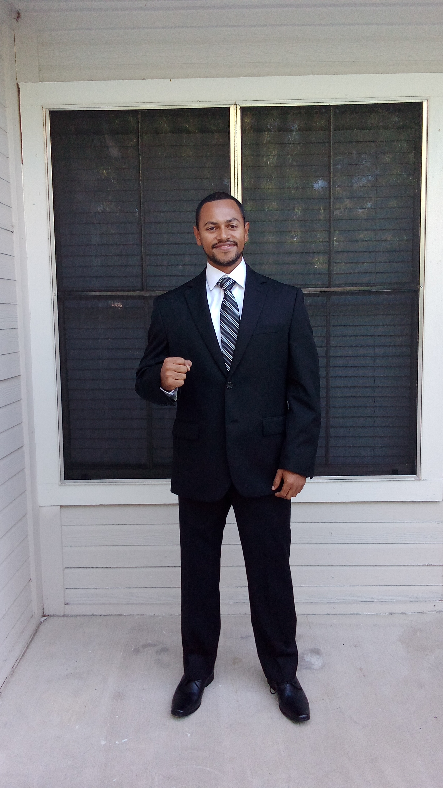

Marco Salcedo | WDD 130
Hi! My Name is Marco Salcedo, I am From Honduras, Most of the time I work as a
call Center agent in diferent areas like:
customer service, Technical support, Sales and collection agencies
I served as a missionary of the church of Jesus Christ of later Day Saints
in Dominican Repubic from 2011 to 2013 in the best mission of the world
🌴Dominican Repubic Santo Domingo East🌴
I like to travel and visit new places, I also like to speak in English
one interesting thing about Myself is that I learned English by Myself. I created
my own plan to study and it worked. Now here I am and English is what helps me to support
My family.
I enjoy riding My Motorcycle to travel all around my country and other countries.
I also Like to challange Myself in Doing New things. I like Learning new Things and
Put them into Practice to see the results of My efforts
I hope to Become a software Developer One Day. That is My Focus by now